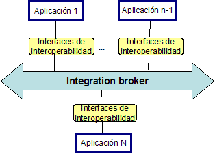

Integración de aplicaciones
- ¿Qué es la EAI?
- Sistemas de Información de Empresas (EIS)
- Arquitectura de aplicaciones existentes
- Arquitectura de aplicaciones modernas
- Retos que plantea la EAI
- Capas en la integración de aplicaciones
- Uso de middleware para EAI
- Servicios de infraestructura necesarios para la integración
- Técnicas de integración
- Opciones alternativas a la integración
- Arquitectura de integración
Las empresas necesitan, cada vez más, un fácil acceso a la información por parte de sus aplicaciones. Esta necesidad presenta nuevos retos para el desarrollo de aplicaciones. La facilidad de acceso a los datos es poco probable que se consiga mediante aplicaciones separadas (stand-alone) usadas por la mayoría de las empresas, debido a la dificultad que representa el compartir datos entre ellas. Sin embargo, muchas empresas no pueden permitirse el lujo de retirar o reemplazar sus aplicaciones stand-alone de un día para otro debido a que juegan un papel crítico en el funcionamiento de la empresa, y a menudo no es rentable desarrollar de nuevo la aplicación en su totalidad. Recordemos que una aplicación stand-alone es aquella que se puede ejecutar sin necesidad de ningún elemento soporte (por ejemplo un navegador).
Por otro lado, a medida que pasa el tiempo, las empresas necesitan introducir nuevas aplicaciones y sistemas. Estas nuevas soluciones se basan normalmente en arquitecturas modernas, que difieren de forma significativa de las arquitecturas usadas por aplicaciones que ya tienen años de uso. A menudo las aplicaciones modernas se adquieren en forma de componentes, que se integran en una aplicación más grande. Estas nuevas aplicaciones necesitan integrarse en el sistema existente para que la información que contienen esté disponible y sea accesible.
En estas situaciones, la integración de aplicaciones corporativas (EAI) adquiere una gran importancia, permitiendo que una empresa integre sus aplicaciones y sistemas existentes y sea capaz de añadir nuevas tecnologías y aplicaciones al nuevo conjunto.
La integración de aplicaciones no es una tarea fácil; de hecho se ha convertido en uno de los problemas más difíciles con los que se enfrenta el desarrollo de aplicaciones para la empresa desde hace pocos años. Los mayores retos se presentan en la integración de diferentes dominios, arquitecturas y tecnologías. Además, los requerimientos de los sistemas de información van creciendo significativamente y cambiando continuamente, por ello los proyectos de integración deben realizarse en el menor tiempo posible, entregar sus resultados rápidamente, y adaptarse a estos requerimientos siempre cambiantes.
Actualmente hay dos formas principales de integración: primero es necesario permitir la integración de aplicaciones dentro de una compañía (intra-EAI), y en segundo lugar, podemos querer promover una integración inter-EAI (business-to-business, B2B).
En esta primera charla presentamos los conceptos básicos de la integración de aplicaciones corporativas. Comenzaremos definiendo el concepto de integración, considerando los retos que representa, así como los tipos, técnicas y tecnologías utilizadas para la integración de aplicaciones corporativas.
¿Qué es la EAI?
La integración de aplicaciones corporativas (Enterprise Application Integration, EAI) es básicamente un nuevo nombre para el proceso de integración en el que las empresas han estado trabajando durante años. EAI hace referencia a una integración global y sistemática.
Antes de definir de forma más precisa la EAI, consideraremos con más detalle cómo surge la necesidad de integrar las aplicaciones de una empresa.
En el pasado, las aplicaciones se ideaban como soluciones individuales a problemas aislados. Los arquitectos software no pensaban en esas aplicaciones como partes de un sistema de información más amplio de la empresa. Esta es la razón de por qué la mayoría de aplicaciones antiguas permiten una interoperabilidad muy limitada con otras aplicaciones. Para modificar dichas aplicaciones y hacerlas más interoperables, se necesita un buen conocimiento del desarrollo de la aplicación y de los procesos lógicos que implementa. Incluso hoy en día, algunas aplicaciones se desarrollan sin tener en cuenta (o muy poco) cómo conectarlas con otros sistemas. Por estas razones, EAI es relevante tanto para las aplicaciones ya existentes, como para aplicaciones modernas.
La importancia de la EAI radica en las expectativas del negocio. Desde el punto de vista del negocio, el objetivo es maximizar los beneficios de cada aplicación y el sistema de información como un todo. Las aplicaciones separadas no pueden cumplir este requerimiento.
Parte del problema es que los datos se encuentran particionados y replicados entre las diferentes aplicaciones. Cada aplicación modela los datos de forma diferente, de acuerdo con las necesidades de la aplicación, no de la empresa. Esto hace que sea difícil "ensamblar" los datos de diferentes aplicaciones, ya que probablemente usarán diferentes tecnologías, aplicaciones y bases de datos para acceder a ellos. En la Figura 1 se muestra un dominio típico de empresa. En este escenario, podemos encontrar "islas" de funciones y datos, y cada una de ellas existe con su dominio del problema de forma separada.
Las empresas necesitan modernizar y mejorar la funcionalidad de sus sistemas de información para seguir siendo competitivas (los gestores ven el sistema de información como una herramienta que pueden utilizar para maximizar los beneficios de la empresa).
Mejorar la funcionalidad de un sistema de información puede hacerse de varias maneras: (a) La forma más obvia consiste en reemplazar las aplicaciones antiguas por una solución más reciente. Incluso aunque a primera vista parezca una solución atractiva, es inaplicable en la mayoría de los casos. Reemplazar sistemas existentes con nuevas soluciones siempre requiere más tiempo y dinero de lo que en principio estaba planificado, incluso teniendo en cuenta los escenarios más pesimistas. Incorporar todas las peculiaridades y casos especiales en el software requiere un conocimiento del sistema existente. Este conocimiento es mucho más fácil de adquirir si la empresa tiene sus procesos del negocio bien documentados, cosa que no suele ocurrir en la práctica. Además, a menudo, no hay una única persona que conozca el proceso en su totalidad; (b) Otra alternativa es la de introducir soluciones comerciales. Esta solución probablemente no sea factible, ya que cada empresa tiene una forma particular de realizar los negocios, y que las distingue. El adaptar soluciones comerciales a la empresa requiere tiempo, y tiempo significa dinero. Introducir nuevos sistemas requiere también entrenar y educar al personal.
Una alternativa factible para mejorar la funcionalidad del sistema de información consiste en conseguir una forma estándar para reusar sistemas existentes pero integrándolos en un sistema global de información de la empresa más amplio. En este sentido, EAI proporciona una metodología estándar para la comunicación entre aplicaciones y fuentes de datos.
Ahora daremos una definición más precisa del término EAI. Realmente, la definición de EAI varía dependiendo del punto de vista:
Desde el punto de vista del negocio, EAI representa la ventaja competitiva que consigue una empresa cuando todas las aplicaciones están integradas en un sistema de información único, capaz de compartir información y soportar flujos de trabajo del negocio (business workflow). La información debe compartirse a menudo desde diferentes dominios y ser integrada en un proceso de negocio. Sin EAI, si bien la información requerida puede que exista y esté disponible en algún lugar y de alguna forma en una aplicación, para los usuarios típicos es prácticamente imposible tener acceso a ella on-line.
Desde el punto de vista técnico, EAI se refiere al proceso de integrar las diferentes aplicaciones y los datos sin tener que modificar demasiado las aplicaciones existentes. EAI debe realizarse utilizando métodos y actividades que permitan que dicho proceso sea efectivo en términos de coste y tiempo.
Existen muchos ejemplos reales de EAI, particularmente en la industria de la banca y servicios financieros, así como en telecomunicaciones. Por ejemplo, AT&T comenzó como un suministrador de servicios de telefonía, a los que añadió los servicios de televisión por cable y otros servicios inhalámbricos. Más tarde se convirtió en un suministrador de banda ancha. La compañía ha crecido absorbiendo a otras compañías y adquiriendo otros negocios. Como resultado de su crecimiento, y antes de sus planes actuales de dividirse en cuatro compañías diferentes, AT&T necesitó integrar sus servicios on-line a sus clientes. Tuvo que integrar sus presentaciones de facturas a todos los servicios, los pagos de los servicios, y la totalidad de los servicios a los clientes. Esto supuso una integración del acceso a las aplicaciones existentes que proporcionaban dichos servicios.
En el proceso de integración de procesos del negocio y los datos, EAI abarca tanto la distribución de dichos procesos y datos, como el concepto de reutilización de módulos. Y lo que es más importante, EAI aborda esta integración como un proceso separado de las diferentes aplicaciones. Es decir, alguien puede integrar varias aplicaciones, incluyendo las fuentes de datos subyacentes, sin tener que comprender o conocer los detalles propios de cada aplicación.
No todas las empresas se benefician de igual forma del proceso de integración. Por supuesto, cuando una empresa tiene únicamente un número limitado de sistemas, que comparten tecnología y arquitectura, la integración es mucho más fácil. A la inversa, puede haber sistemas formados por grandes aplicaciones diferentes, distribuidas geográficamente en varias plataformas, algunas de las cuales tienen funcionalidades comunes. En este caso, la empresa se beneficiará considerablemente del proceso de integración.
Además, para realizar una integración de forma exitosa es necesario evaluar el estado de las aplicaciones existentes, analizar los requerimientos del sistema, y comparar la situación actual con las metas fijadas y los requerimientos actuales. Este estudio debe realizarse caso por caso, ya que no es fácil definir procedimientos universales.
Puesto que hemos visto que la comprensión de los sistemas existentes es vital para una integración efectiva, estudiaremos el concepto de sistemas de información, y analizaremos más de cerca la arquitectura de dichos sistemas.
Sistemas de Información de Empresas (EIS)
Antes de entrar en detalles sobre la EAI, es útil entender la definición de un sistema de información de empresa (EIS: Enterprise Information System). Una empresa requiere ciertos procesos de negocio y datos subyacentes para ejecutar dichos procesos. Un EIS abarca los procesos del negocio y la infraestructura para las tecnologías de información (IT: Information Technology). Los procesos del negocio incluyen aplicaciones para la gestión del procesamiento de nóminas, gestión de inventario, control de producción de fabricación, y la contabilidad financiera.
Definimos un sistema de información de empresa como un sistema con una o varias aplicaciones que proporciona la estructura de información para la empresa. Un EIS proporciona un conjunto de servicios a sus usuarios, que pueden estar disponibles en distintos niveles de abstracción (por ejemplo a nivel de sistema, nivel de datos, o nivel de negocio).
En la Figura 2 se puede apreciar gráficamente esta situación. En el entorno mostrado, las aplicaciones residen en un servidor de aplicaciones. Dicho servidor tiene una infraestructura particular dependiente del vendedor, contemplando en particular los servicios de procesamiento de transacciones, seguridad y balanceo de carga. Las aplicaciones incluidas en el servidor pueden ser suministradas por diferentes vendedores, o pueden desarrollarse en el departamento IT de la empresa. Las aplicaciones están escritas en varios lenguajes, como COBOL, C, y C++. Los clientes acceden a las diferentes aplicaciones mediante interfaces (APIs: Application Programming Interfaces). Un API es alguna rutina que permite a un cliente realizar operaciones tales como crear una orden de compra o actualizar un registro de usuario. La interfaz de acceso a los datos permite acceder al almacenamiento de los datos (ficheros o base de datos relacional). Los interfaces de objetos del negocio son abstracciones que representan la lógica específica del negocio para acceder a las funciones y los datos.
Hay muchas y diferentes aplicaciones que pueden catalogarse como un EIS. Por ello los EIS varían unos de otros, incluso dentro de la misma empresa. Una empresa puede desarrollar varios EISs a lo largo del tiempo, dependiendo de las necesidades particulares del momento. Por ejemplo, una empresa puede comenzar con un sistema de fabricación. A medida que pasan los años y la empresa crece, se añaden otros paquetes como contabilidad, atención al cliente y recursos humanos. Algunos servicios puede incluirlos en la plataforma en donde residen las operaciones relacionadas con la fabricación, sin embargo, otros requerirán ser desarrollados con una plataforma o arquitecturas diferentes. La empresa no solamente añade nuevos sistemas software, sino que adquiere hardware adicional que puede ser completamente diferente de su configuración original. Es fácil ver que cuando una empresa opera durante largo tiempo, puede estar usando EIS que han sido desarrolladas e instaladas sobre diferentes plataformas y arquitecturas.
Arquitectura de aplicaciones existentes
Los proyectos EAI tienen que tratar con aplicaciones (sistemas de información) existentes. Algunas de las aplicaciones existentes son antiguas, basadas en tecnologías no consideradas actualmente como "estado del arte", con lenguajes de programación en desuso, y sobre plataformas anteriores a las actuales, estas aplicaciones se conocen con el nombre de aplicaciones o sistemas legacy. Podemos considerar dos tipos de sistemas legacy: los sistemas monolíticos tradicionales (basados principalmente en sistemas mainframe), y los sistemas cliente/servidor (basados mayormente en PC's).
Una arquitectura monolítica contiene la presentación, la lógica del negocio y los datos en la misma aplicación. Normalmente se trata de aplicaciones con un diseño estructurado e implementadas con lenguajes estructurados como COBOL, Fortran y PL/1 entre otros. En la mayoría de casos, los datos se almacenan en ficheros usando diferentes formatos binarios. Los sistemas contienen miles de líneas de código que han sido desarrolladas y mantenidas a lo largo de los años por diferentes desarrolladores. Usualmente no se dispone de documentación, y en el peor de los casos, tampoco del código fuente. La mayoría de dichos sistemas residen en ordenadores mainframe. Huelga decir que inicialmente no había ningún tipo de integración entre las diferentes aplicaciones monolíticas. Sin embargo, las soluciones de integración sobre dichos sistemas se comenzó a realizar hace unas tres décadas.
Un primer intento de integración consiste en enlazar las diferentes aplicaciones con una base de datos centralizada (ver Figura 3). Dicha base de datos normalmente no almacena todos los datos de todas las aplicaciones (debido a restricciones de capacidad y rendimiento), por lo tanto éstas todavía necesitan de bases de datos locales. Este tipo de integración requiere una re-programación de cada aplicación.
Desde una perspectiva técnica, esta integración no es demasiado difícil cuando solamente hay una plataforma en la empresa, y no hay demasiadas aplicaciones a integrar. Desafortunadamente, hay un gran número de empresas que no pertenecen a esta categoría.
Posteriormente, en la década de los 80, el proceso de reemplazamiento de los mainframes por PCs lleva consigo algunos grandes cambios en las arquitecturas de las aplicaciones, pero complica todavía más las cosas. No se dispone de estrategias para estandarizar las plataformas y tecnologías a usar, con lo que cada departamento es libre de realizar su elección, usualmente basada en preferencias personales, y no en los objetivos de la empresa en su totalidad. Por un lado las necesidades de integración se hicieron cada vez más crecientes, por otro lado, los PCs interconectados comenzaron a sustituir a los terminales "mudos". A medida que fue necesario compartir los datos entre los usuarios, las arquitecturas monolíticas se volvieron inviables.
La solución a estos problemas fue la arquitectura cliente/servidor que separa las aplicaciones en dos capas (ver Figura 1.4). En la mayoría de los casos, la gestión de los datos se separó del resto de la aplicación (ver Figura 4a). Esto significaba que la lógica del negocio y la interfaz del usuario todavía permanecía unida, y en demasiados casos, interconectadas. Debido a que el cliente realizaba la mayor parte del procesamiento implicado en la lógica del negocio, a este tipo de aplicaciones cliente/servidor se les ha denominado clientes ricos (fat clients). Los datos usualmente residían en uno o varios servidores dedicados de gestión de base de datos (DBMS). Otra posibilidad para los sistemas cliente/servidor fue separar la lógica del cliente y situarla en el servidor (ver Figura 4b). En este escenario, el código en la parte del cliente es mucho más sencillo, y a dichos clientes se les ha llamado clientes ligeros (thin clients). La lógica del negocio se almacenaba en el servidor de la base de datos (en forma de procedimientos con sentencias SQL), o en un servidor fuertemente acoplado a la base de datos. La mayoría de los gestores de bases de datos soportan procedimientos almacenados, si bien hay variaciones en la sintaxis y en sus capacidades, creando así otro problema potencial: el traslado de esta lógica de un DBMS a otro es una tarea extremadamente ardua, si no prácticamente imposible.
La mayor parte de las nuevas aplicaciones, a partir de entonces se desarrollaron siguiendo la arquitectura cliente/servidor, pero las soluciones monolíticas permanecieron, haciendo así crecer la necesidad de integración. Además, la arquitectura cliente/servidor implica un estrecho acoplamiento entre la aplicación y la base de datos.
El número de aplicaciones diferentes en una misma empresa fue creciendo. Si bien diferentes aplicaciones resolvían problemas diferentes, en muchos casos había algún solape funcional entre ellas, con lo que se podía dar el caso de datos similares residentes en bases de datos diferentes, con nombres diferentes. Para una integración efectiva, el acceso a los mismos datos no resuelve todos los problemas. Dicho acceso a los datos y su posible transferencia entre bases de datos no es suficiente debido a la dificultad que entraña el análisis de dichos datos para obtener información del negocio valiosa para el soporte de decisiones. Tampoco es posible reusar todas las funcionalidades de otras aplicaciones. Sin la reusabilidad de las funciones la única posibilidad consiste en implementar las funcionalidades en diferentes aplicaciones, incrementando la complejidad de nuevo (especialmente a la hora de mantener las aplicaciones). Duplicar la funcionalidad es necesario debido a que si accedemos a los datos en la base de datos directamente, evitamos implementar reglas del negocio en la aplicación original; pero esto significa que tenemos que ser extremadamente cautos debido a que un acceso directo a la base de datos puede amenazar la integridad del sistema.
Para resolver el problema del análisis de grandes cantidades de datos almacenados en aplicaciones diferentes, y permitir el compartir funcionalidades de las aplicaciones, se utilizan los datawarehouse y los sistemas ERP.
A principios de los 90, la integración es una cuestión relevante desde dos puntos de vista distintos. Por un lado tenemos el uso de data warehouses. Un data warehouse es un repositorio central para todos los datos significativos que las aplicaciones de una compañía obtienen. Debido a la variedad de datos bien estructurados contenidos en ellos, los data warehouses fueron (y todavía siguen siendo) efectivos como sistemas de soporte de decisiones off-line, y útiles siempre que puedan obtenerse datos "en bruto" y analizarlos para derivar conclusiones a partir de ellos.
Los datos de las bases de datos de las aplicaciones se envían al data warehouse a intervalos de tiempo predeterminados, normalmente una vez por día. Esto hace que los data warehouses no sean la elección perfecta para la integración, especialmente cuando no podemos permitirnos el trabajar con datos que pueden estar anticuados. Los procedimientos asociados con un sistema data warehouse se asemejan a los de la Figura 5, en donde los datos desde diferentes bases de datos son extraídos, transformados y cargados en un data warehouse central. Las reglas para estas tres fases se definen como meta-datos.
Por otro lado, se comienzan a usar sistemas de planificación de recursos de la empresa (Enterprise Resource Planning, ERP). Los sistemas ERP son sistemas de gestión de empresas, típicamente implementados por un vendedor particular como un conjunto de aplicaciones integradas que cubren todas las facetas del negocio, incluyendo planificación, fabricación, ventas y marketing. La idea es usar los sistemas ERP para cubrir todas las necesidades de información de la empresa. Por desgracia, la experiencia ha demostrado que los sistemas ERP no pueden satisfacer las necesidades de información de una compañía totalmente. Si bien el código fuente está disponible para algunos de ellos, los vendedores no quieren realizar cambios específicos sobre ellos. Sin embargo, cada empresa tiene muchas particularidades que necesitan ser cubiertas sobre una base individual, además de tener que reaccionar de forma rápida para adaptarse a los cambios del mercado. Todo ello hace que se requieran modificaciones o añadidos sobre el sistema de información, y esperar las soluciones de los suministradores de los ERP no es práctico. Algunos resultados de estudios de mercado sugieren que los sistemas ERP típicamente cubren únicamente un 25-40% de las necesidades de información de una empresa (el resto se cubre con otras aplicaciones software).
La situación actual es que las empresas se encuentran con una mezcla disparatada de sistemas existentes heterogéneos de los cuales dependen sus negocios. Desgraciadamente esta mezcla de sistemas diferentes no ha sido diseñada de una manera unificada (solamente ha crecido, y continuará creciendo). La heterogeneidad consume recursos de desarrollo. En vez de crear soluciones a problemas nuevos, muchos desarrolladores emplean una considerable cantidad de tiempo y recursos trabajando sobre soluciones viejas. Y tenemos que tener en cuenta, que el número de computadores en una empresa suele ser finito.
Las aplicaciones más críticas para la mayor parte de las empresas son las aplicaciones de procesamiento de transacciones. Suelen ser aplicaciones desarrolladas a lo largo de muchos años, los desarrolladores han ido cambiando varias veces, y es difícil encontrar a alguien que las entienda en su totalidad. Algunas de ellas todavía se ejecutan sobre sistemas mainframe. Las empresas son renuentes, comprensiblemente, a modificar o reemplazar dichas aplicaciones. El dilema entonces se convierte en cómo modernizarlas sin comprometer las operaciones.
Arquitectura de aplicaciones modernas
Cualquier arquitectura de una aplicación moderna debe satisfacer la necesidad de un desarrollo rápido de la solución, posiblemente mediante la composición de componentes software. Además, debería soportar propiedades tales como mantenibilidad, flexibilidad y escalabilidad, entre otras. La solución actual consiste en utilizar arquitecturas multi-capa, la más común contiene tres capas (ver Figura 6):
- Capa de presentación o interfaz de usuario. Maneja servicios tales como entrada, diálogos, y gestión de la visualización de los datos
- Capa intermedia o de lógica del negocio. Proporciona los servicios de la lógica del negocio que son compartidos entre aplicaciones diferentes.
- Capa de persistencia de datos. Proporciona una gestión de los datos y otras funcionalidades relacionadas.
Cada capa, y en particular la capa de lógica del negocio, puede subdividirse en varias sub-capas dando lugar a la arquitectura lógica multi-capa. En la Figura 1.6 se pueden observar los elementos de la capa de lógica del negocio denominados componentes.
Un componente es un código ejecutable que implementa una cierta funcionalidad. Dicha funcionalidad es accesible para el resto de la arquitectura mediante uno o más interfaces. Los componentes están fuertemente encapsulados y ocultan sus detalles internos a sus clientes (otros componentes, métodos de objetos, procedimientos, funciones, etc.). La única forma que tiene un cliente de acceder a una componente es a través de su interfaz.
Se puede acceder a la interfaz de una componente usando un alto nivel de abstracción, de forma que no sea necesario preocuparse ni de su implementación, ni tampoco de su localización o forma de comunicación. Un middleware se ocupa de todos los detalles de la comunicación permitiendo así la interoperabilidad entre componentes (ver Figura 7).
Los componentes constituyen una forma de empaquetar código ejecutable, no son ninguna técnica de implementación en sí, si bien los componentes son a menudo confundidos con objetos. Es cierto que los componentes y los objetos comparten algunos conceptos, como los interfaces y la encapsulación. Sin embargo, los componentes difieren de los objetos en que proporcionan una funcionalidad más amplia y muy poca relación con otros componentes. Cualquier cliente puede usar los servicios del componente, no importa en qué lenguaje esté escrito, ni dónde se encuentre físicamente, o cual sea su estructura interna. No es necesario que los componentes sean implementados con lenguajes orientados a objetos.
Los componentes pueden encontrarse en diferentes capas. Los componentes de la interfaz de usuario difieren de los de la capa de lógica del negocio, puesto que solamente proporcionan alguna forma de representación visual, mientras que estos últimos proporcionan fundamentalmente servicios.
Los componentes se desarrollan usando modelos de componentes. Dichos modelos proporcionan el entorno en el que se ejecutan los componentes. Modelos populares de componentes para la capa de presentación son los JavaBeans, o Microsoft ActiveX. Componentes usuales de la capa de negocio incluyen CORBA (Common Object Request Broker Architecture), y EJB (Enterprise Java Beans).
Los beneficios de una arquitectura multi-capa son obvios y numerosos: integración y reusabilidad, encapsulación, distribución, particionamiento, escalabilidad, desarrollo independiente, y desarrollo rápido, entre otros. Pero también presentan desventajas como los riesgos de seguridad, y la gestión de los componentes. Además, la arquitectura lógica tiene una arquitectura física asociada, que puede corresponderse con ésta o no (podemos ubicar cada capa lógica en una física, o agrupar varias lógicas en una sola capa física, por ejemplo para minimizar los tiempos de comunicación entre sus componentes).
Un ejemplo de arquitectura multi-capa son los sistemas basados en web, que presentan a menudo una capa separada de la presentación denominada capa de componentes web, para gestionar la lógica de la presentación de la web.
Con el auge de la web, la integración de aplicaciones adquiere un mayor significado que va más allá de la mera combinación de aplicaciones en una empresa. Los servidores de la empresa actualmente, manejan y mantienen grandes cantidades de datos y lógica del negocio. Además, debido a que la web facilita el fácil acceso a los servicios y la información, se ha convertido en uno de los principales medios de comunicación. Una empresa debe ser capaz de hacer accesibles sus datos, desde empleados internos a socios externos, suministradores y fabricantes.
Hasta ahora, las aplicaciones se clasifican como frontales de oficina (front-office) e internas de la oficina (back-office). Las aplicaciones front-office se utilizan para interactuar con el cliente o usuario final. Incluyen aplicaciones para la gestión de las relaciones con los clientes y automatización de las tareas de marketing. Las aplicaciones back-office proporcionan la infraestructura de la información para ejecutar los procesos back-end de una empresa. Las aplicaciones que proporciona un ERP son buenos ejemplos de aplicaciones back-office. La integración tradicional se centra en integrar las aplicaciones front-office y back-office. Sin embargo, esta integración está siendo condicionada por la web incluyendo también a las aplicaciones web.
Ya que es un imperativo para un EIS cambiar a una arquitectura basada en web, las aplicaciones de la misma necesitan ser desplegadas en plataformas de aplicaciones estándar, cada vez más extensamente utilizadas. Actualmente los servidores de empresa se consideran como plataformas adecuadas para desarrollar aplicaciones web. Tal y como muestra la Figura 8, los servidores de aplicaciones son particularmente apropiados para las áreas B2C (business-to-customer) y B2B (business-to-business). El servidor de aplicaciones proporciona un punto de integración natural entre los sistemas de información existentes en la empresa y las aplicaciones web. El servidor de aplicaciones ayuda también en el manejo de transacciones y puede escalarse si es necesario. La plataforma J2EE es una tecnología a tener en cuenta para las empresas y vendedores de aplicaciones.
Retos que plantea la EAI
Los EIS difieren significativamente, en términos de nivel de soporte tecnológico, restricciones administrativas y tecnológicas, capacidad para integrarse con otros sistemas, y el grado de exposición de detalles de bajo nivel. Por lo tanto, estos elementos constituyen los principales retos que debe asumir la integración de aplicaciones:
- Nivel de soporte tecnológico: puede variar enormemente de unas aplicaciones a otras. Tomemos por ejemplo, el soporte para transacciones y seguridad. Algunos EIS pueden no ofrecer soporte para acceso transaccional, o, si tienen algún tipo de soporte, está muy limitado. Otros EIS más avanzados ofrecen soporte para ambos servicios.
- Restricciones administrativas y tecnológicas: normalmente los sistemas legacy suelen imponer restricciones de uso, debido a que están estructuradas de forma más rígida. Por ejemplo, en un sistema de este tipo puede ser difícil crear nuevas cuentas de usuario.
- Capacidad para integrarse con otros sistemas: los EIS pueden diferir en términos de sus modelos de programación de aplicaciones y clientes API, lo que hace difícil su integración con otros EIS. Estas diferencias existen debido a que dichas aplicaciones se han desarrollado en momentos diferentes, utilizando las tecnologías más adecuadas en dichos momentos. Y además no se ha tenido en cuenta la interoperabilidad con otros sistemas como un objetivo de diseño primario.
- Grado de exposición de detalles de bajo nivel: los APIs de los clientes pueden diferir en los detalles de bajo nivel de transacciones y seguridad que muestran a los desarrolladores de aplicaciones, y esto complica la integración de diferentes EIS. El desarrollador de aplicaciones debe conocer los detalles de programación de bajo nivel del API del cliente para una integración efectiva. Por ejemplo, supongamos que un EIS define el API del cliente usando una librería C. Dicha librería define métodos que usan las aplicaciones cliente para gestionar las transacciones y realizar un acceso transaccional a dicho EIS. La librería puede contemplar mecanismos de comunicación distribuidos entre las aplicaciones cliente y los EIS. El desarrollador de aplicaciones tiene por lo tanto, la tarea añadida de comprender esta librería C (y los mecanismos de bajo nivel que contempla esta API), para usar el API del cliente. Esta complejidad adicional incrementa el esfuerzo de la integración de aplicaciones.
Dada la complejidad del desarrollo de aplicaciones y la integración de los EIS, es importante que los desarrolladores utilicen herramientas de desarrollo estándares y entornos de integración.
El acceso transaccional y la seguridad son cuestiones importantes en términos de integración EIS. Las empresas llevan a cabo sus negocios utilizando la información almacenada en sus EIS, el éxito de una empresa depende de forma crítica de su información, así como de un acceso seguro a la misma.
Otro requerimiento importante es la escalabilidad, con el fin de permitir que la empresa pueda ampliar sus relaciones con suministradores, compradores, y socios. Para lograr esto, el uso de un pooling de conexiones se convierte en un requerimiento importante para la integración de sistemas.
Adicionalmente, las empresas deben considerar su inversión actual en las aplicaciones existentes y un plan de integración que resulte efectivo en cuanto a coste. La mayoría de las empresas y EIS han invertido cantidades considerables en el código de sus aplicaciones e infraestructura asociada. Si bien reconocen la necesidad de migrar a una plataforma J2EE, deben lograr esta integración de forma incremental en lugar de en un solo paso. Una migración incremental les permite mantener un uso máximo de sus sistemas existentes, pero añadiendo de forma gradual nuevas funcionalidades como componentes J2EE, haciendo así accesibles sus aplicaciones mediante J2EE. Durante este proceso de migración, pueden descargar sobre los vendedores del servidor de aplicaciones la gestión de la complejidad de las transacciones y la seguridad, y así dejar que los desarrolladores del software se centren en la resolución de problemas del dominio del negocio.
Capas en la integración de aplicaciones
La integración de aplicaciones debe realizarse con un coste lo más bajo posible y en un tiempo también corto, es decir, debe ser efectiva en coste y tiempo. La arquitectura de integración se construye paso a paso y en varios niveles. La idea es dividir el problema de integración en varios sub-problemas. Comenzaremos construyendo la arquitectura por el nivel inferior e iremos subiendo. Los procesos más importantes en la integración de aplicaciones son:
- Integración de la plataforma (hardware).
- Integración a nivel de datos.
- Integración de la interfaz de la aplicación.
- Integración de métodos del negocio.
- Integración de la presentación.
- Integración inter-EAI o integración B2B.
Omitir alguna capa acelera el proceso de integración a corto plazo, pero podemos estar seguros de que "pagaremos por ello" a largo plazo. La capa de integración de interfaz de la aplicación y métodos del negocio se combinan a veces en una capa denominada integración a nivel de negocio.
Integración de la plataforma. Es el prerequisito para permitir la integración en su totalidad. El objetivo es alcanzar la interoperatividad entre las diferentes plataformas, por ejemplo mainframes con distintos sistemas operativos como VMV, OS/400, PC con Windows, Linux, estaciones Solaris, AIX, etc. Actualmente la mayoría de plataformas hardware utilizan estándares abiertos, con lo que alcanzar la interoperatividad de éstos no plantea demasiadas dificultades. Sin embargo, los problemas se plantean con la integración de plataformas ya no soportadas por sus vendedores, y también cuando se han utilizado soluciones propietarias.
Integración a nivel de datos. A menudo la integración a nivel de datos es el punto de partida de la integración. Esta capa habilita el acceso a los datos compartidos por otras aplicaciones y permite mover dichos datos entre diferentes almacenamientos de datos. La integración a nivel de datos puede complicarse bastante cuando se ven implicados cientos de estos almacenamientos. Las dificultades típicas son la no comprensión de los esquemas, identificación de los datos, garantía de la consistencia, etc. Además, es necesario unificar el modelo de datos, resolviendo las redundancias de datos y anomalías semánticas introducidas durante el desarrollo a lo largo de los años.
Integración de la interfaz de la aplicación. Esta capa habilita una forma de integración de alto nivel, en la que una aplicación usa alguna otra funcionalidad residente en otra aplicación. Esto se consigue usando las interfaces de programación de aplicaciones (APIs) que cada una de ellas expone a las demás. A menudo se utiliza alguna forma de middleware para transferir las peticiones y resultados, como los orientados a mensajes (MOM), procedimientos remotos (RPC), e incluso los Object Request Brokers (ORB).
Integración de métodos del negocio. Esta integración permite dar soporte a los procesos del negocio en la empresa mostrándo los métodos de alto nivel como abstracciones accesibles mediante interfaces. Esta capa presenta el sistema de información de la empresa en su totalidad tal y como quisiéramos tenerlo (o tal y como quisiéramos haberlo desarrollado si pudiésemos reconstruirlo de nuevo con unos requerimientos claros sobre lo que pretendemos obtener del sistema integrado, con el conocimiento y soporte de las nuevas tecnologías). Esto significa que las interfaces del sistema de información se basan en una arquitectura moderna. Pero las funcionalidades no son reimplementadas; en su lugar usan las aplicaciones existentes. Dichas aplicaciones se remodelan de tal forma que expongan la funcionalidad de la capa de proceso del negocio y se incluyan en la nueva arquitectura. El conseguir la integración a nivel de negocio se asocia a menudo con el proceso de reingeniería del negocio y no es únicamente un problema técnico. Requiere la implementación de varias capas como base para integrar las aplicaciones en un nivel alto de abstracción.
Integración de la presentación. Una vez que las aplicaciones existentes se remodelan y encapsulan en la capa intermedia, en la que exponen su funcionalidad a través de interfaces de alto nivel, resulta crucial que el usuario también observe una vista unificada del sistema de información. Mediante el desarrollo de una capa de presentación unificada, estaremos ocultando el hecho de que las aplicaciones que se están ejecutando son aplicaciones diferentes, algunas de ellas legacy, y otras desarrolladas recientemente. De esta manera se mejora la eficiencia de los usuarios finales, ya que no tienen que cambiar entre diferentes aplicaciones existentes y usar diferentes interfaces de usuario. Además, se proporciona una forma de reemplazar parte de los sistemas legacy en el futuro sin influenciar al resto de partes del sistema.
Integración inter-EAI o integración B2B. Actualmente la integración de las aplicaciones de una compañía puede no resultar suficiente. Hay una necesidad creciente de permitir una integración entre empresas, a menudo referida como integración B2B (business-to-business), o también e-business. Por supuesto, el requerimiento para una integración eficiente B2B requiere una integración de cada una de las empresas a nivel de negocio en ambos sentidos.
Uso de middleware para EAI
Se denomina middleware al software de los servicios del sistema que se ejecuta entre la capa del sistema operativo y la capa de aplicación. Conecta dos o más aplicaciones, proporcionando interoperabilidad entre ellas. El concepto de middleware cobra protagonismo hoy en día, ya que todos los proyectos de integración tienen que usar una o varias soluciones diferentes middleware.
Usaremos el término middleware para denotar a aquellos productos software que actúan como "pegamento" entre aplicaciones, que sean distintos de simples funciones de importación y exportación de datos que pudieran formar parte de las propias aplicaciones.
Todas las formas de middleware son útiles para facilitar la comunicación entre diferentes aplicaciones software. El middleware introduce un nivel de abstracción en la arquitectura del sistema, reduciendo así su complejidad considerablemente. Por otro lado, cada producto middleware introduce una cierta sobrecarga en el sistema con respecto a la comunicación, lo cual puede afectar al rendimiento, la escalabilidad, y otros factores de eficiencia. Esto es importante tenerlo en cuenta, particularmente si nuestros sistemas son críticos y son usados por un gran número de clientes concurrentemente.
Los productos middleware comprenden una amplia variedad de tecnologías, incluyendo las siguientes:
Tecnologías de acceso a bases de datos. Proporcionan acceso a una base de datos a través de una capa de abstracción que permite cambiar el sistema de gestión de base de datos (DBMS) sin tener que modificar el código fuente de la aplicación. En otras palabras, permiten usar el mismo o similar código para acceder a diferentes fuentes de bases de datos. Las tecnologías de acceso a bases de datos difieren en la forma de los interfaces que proporcionan. Pueden ofrecer acceso a las bases de datos orientado a la función o a objetos. Los representantes más conocidos son JDBC y Java Data Objects (JDO) en la plataforma Java, y Open Database Connectivity (ODBC) y Active Data Objects (ADO) en la plataforma Microsoft.
Middleware orientado a mensajes. También denominado MOM: Message Oriented Middleware. Es una estructura cliente/servidor que incrementa la interoperabilidad, flexibilidad y portabilidad de las aplicaciones. Permite la comunicación entre aplicaciones entre plataformas distribuidas y heterogéneas, y reduce su complejidad debido a la ocultación de los detalles de la comunicación y de las plataformas y protocolos implicados; la funcionalidad del MOM es accedida mediante APIs. Las aplicaciones pueden por lo tanto intercambiar datos sin necesidad de comprender los detalles del resto de aplicaciones, arquitecturas y plataformas implicadas.
Geralmente MOM reside tanto en la parte del cliente como en la del servidor. Proporciona comunicación asíncrona mediante el uso de colas de mensajes para almacenar los mensajes temporalmente. La comunicación puede darse incluso aunque el receptor esté temporalmente no disponible, y los mensajes pueden contener casi cualquier tipo de dato. Cada mensaje espera en la cola y es entregado tan pronto como el receptor es capaz de aceptarlo. La comunicación asíncrona tiene el inconveniente de que, ya que el servidor no bloquea a los clientes, puede continuar aceptando peticiones con el riesgo de producir una situación de sobrecarga.
La Figura 9 muestra dos aplicaciones que usan MOM. Las aplicaciones acceden a MOM a través de un API, y son responsables de construir y analizar los mensajes, pero MOM oculta todos los detalles de red y transporte.
MOM es adecuado para comunicación entre aplicaciones dirigida por eventos. También es adecuado para sistemas orientados a objetos. Los productos MOM son propietarios y están disponibles desde mediados de los 80, de forma que son incompatibles entre ellos. El uso de un único producto tiene como consecuencia la dependencia de un vendedor específico, lo que puede influenciar negativamente la flexibilidad, portabilidad, mantenibilidad e interoperabilidad de las aplicaciones. El mismo producto MOM debe poder ejecutarse sobre cada una de las plataformas que están siendo integradas. Sin embargo, no todos los productos MOM soportan todas las plataformas, sistemas operativos y protocolos. La plataforma Java proporciona formas de conseguir una relativamente alta independencia de un vendedor específico mediante una interfaz común, usada para acceder a todos los productos middleware: el servicio de mensajes java (JMS).
Llamadas a procedimientos remotos (RPC). Las RPC: Remote Procedure Call constituyen una infraestructura cliente/servidor orientada a mejorar la interoperabilidad entre las aplicaciones desde plataformas heterogéneas. Al igual que MOM, oculta los detalles de la comunicación. La principal diferencia con MOM es la forma de comunicación, mientras que MOM soporta comunicación asíncrona, RPC promueve la comunicación síncrona en forma de petición-espera, que bloquea al cliente hasta que el servidor completa la respuesta. RPC previene la sobrecarga de la red (a diferencia de MOM). Hay alguna implementación asíncrona de RPC disponible, pero son la excepción y no la regla. En la Figura 10 se muestra un esquema de dos aplicaciones que utilizan RPC.
RPC es adecuado para aplicaciones cliente/servidor el las que el cliente puede realizar una petición y esperar a que el servidor emita la respuesta antes de continuar el proceso. Además, RPC requiere que el receptor de la llamada esté disponible para aceptar la llamada remota. Si el receptor falla, la llamada remota no tiene lugar, ya que las llamadas no se almacenan temporalmente tal y como ocurre en MOM.
Monitores de procesamiento de transacciones (TP). Los TP: Transaction Processing monitors, son importantes en aplicaciones con requisitos críticos. Representan la primera generación de servidores de aplicaciones. Los TP se basan en el concepto de transacciones, de forma que monitorizan y coordinan las transacciones entre diferentes recursos. Si bien el nombre sugiere que esta es su única tarea, tienen otras funcionalidades adicionales: gestionar el rendimiento, y servicios de seguridad, tal y como muestra la Figura 11.
Los TP gestionan el rendimiento de las transacciones mediante técnicas de balanceo de carga y de poolling de recursos, de forma que pueda existir un gran número de clientes accediendo concurrentemente y de forma eficiente a los recursos de computación. Por otro lado los servicios de seguridad proporcionados por los TP permiten habilitar o deshabilitar accesos de clientes a fuentes particulares de datos.
Intermediarios de peticiones de objetos (ORB). Los ORB: Object Request Brokers, gestionan y soportan la comunicación entre objetos distribuidos o componentes sin necesidad de preocuparse por los detalles de la comunicación. Los detalles de implementación de un ORB no están visibles para los componentes. De esta forma se proporciona transparencia en la localización, transparencia en el lenguaje de programación, protocolo y sistema operativo.
La comunicación se lleva a cabo a través de interfaces, y normalmente es síncrona. Proporcionan la ilusión de "localidad", haciendo que todos los componentes parezcan locales, aunque en realidad estén en otra red. Simplifican el desarrollo de forma considerable pero pueden tener una incidencia negativa en el rendimiento de la aplicación.
La Figura 12 muestra dos componentes que se comunican mediante un ORB.
Hay tres estándares principales para ORBs: (a) OMG CORBA, (b) Java RMI y RMI-IIOP, y (c) Microsoft COM/DCOM/COM+.
Hay muchos productos que cumplen el estándar ORB. RMI-IIOP. RMI-IIOP utiliza el mismo protocolo para comunicaciones entre componentes que CORBA ORB, de forma que resulta interoperable con CORBA.
Solamente existe una implementación del modelo Microsoft, el cual difiere de los otros dos en algunos conceptos importantes. Aún así, la interoperabilidad entre RMI-IIOP y CORBA por un lado, y el modelo de Microsoft por otro, es posible.
Servidores de aplicaciones. Son la forma más reciente de middleware. Manejan todas o la mayoría de las interacciones entre la capa del cliente y la capa de persistencia de datos. Proporcionan una colección de servicios middleware como los ORBs, MOM, gestión de transacciones, seguridad, balanceo de carga y gestión de recursos. Además incluyen una gestión del entorno en el que se despliegan los componentes lógicos del negocio: el contenedor.
Los servidores de aplicaciones proporcionan una plataforma excelente para integración. Independientemente de que se use para integración o para el desarrollo de aplicaciones nuevas los servidores de aplicaciones son plataformas software. Una plataforma software es una combinación de tecnologías software necesarias para ejecutar aplicaciones. En este sentido los servidores de aplicaciones, o más específicamente, la plataforma software que soportan, definen la infraestructura de todas las aplicaciones desarrolladas y ejecutadas sobre ellos. Los servidores de aplicaciones son la plataforma de integración a elegir para aplicaciones desarrolladas con una arquitectura multi capa. Ademas, los servidores de aplicaciones pueden soportar una plataforma software estandarizada, abierta y generalmente aceptada.
Los aspectos más importantes a tener en cuenta en una plataforma software son:
- Aspectos técnicos: incluyen las tecnologías software que se incluyen en la plataforma, así como interoperabilidad, escalabilidad, portabilidad, disponibilidad, fiabilidad y seguridad, entre otras cuestiones.
- Carácter abierto: existen diferentes soluciones, desde plataformas cerradas asociadas a un vendedor particular, hasta plataformas totalmente abiertas, en donde cada cosa, incluido el software es de libre distribución y puede cambiarse libremente.
- Interoperabilidad: es crucial para considerar la adopción de una determinada plataforma, en particular la forma en que dicha plataforma regula las adiciones y modificaciones de software.
- Coste: probablemente es el más difícil de evaluar debido a que incluye los costes del servidor de aplicaciones, del hardware, del aprendizaje de su uso, y el coste del mantenimiento de las aplicaciones.
- Madurez: es un indicador de cuán estable es la plataforma. Cuanto más madura sea, más habrá sido probada en entornos reales, probando su idoneidad para aplicaciones a gran escala.
En la Figura 13 se muestra cómo puede usarse un servidor de aplicaciones para integración con aplicaciones corporativas existentes y EIS. Un servidor de aplicaciones soporta un modelo basado en componentes para el desarrollo de aplicaciones. Con este modelo, una aplicación puede estar compuesta por diferentes tipos de componentes, tales como componentes Web o componentes de lógica de negocio. El servidor de aplicaciones proporciona soporte para el desarrollo de aplicaciones basadas en Web, transaccionales, seguras, distribuidas y escalables. Los servicios para la ejecución del sistema que proporciona el servidor de aplicaciones se ocultan a los componentes de la aplicación; dichos servicios incluyen: soporte para transacciones, seguridad, balanceo de carga, acceso a bases de datos, mensajería asíncrona, comunicaciones distribuidas, protocolos web y soporte XML.
Es posible desarrollar y desplegar aplicaciones sobre un servidor de aplicaciones tales que puedan conectar múltiples EIS heterogéneos y aplicaciones corporativas existentes. En este caso, los componentes Web y de lógica del negocio que se despliegan en la capa intermedia (o servidor de aplicaciones) usan adaptadores para acceder a los datos y funciones asociadas con las aplicaciones de estos EIS. Los componentes de aplicaciones desplegados en el servidor de aplicaciones usan adaptadores síncronos para conectar y acceder a los EIS. También pueden usar un adaptador a un intermediario de mensajes para realizar la integración utilizando mensajería asíncrona.
Las plataformas de integración típicamente tienen más de una tecnología middleware. De hecho es usual encontrar productos middleware de diferentes vendedores en una misma plataforma de integración. Por ejemplo, en servidores de aplicaciones que cumplen J2EE, diferentes vendedores incluyen diferentes tipos de middleware adicional. El servidor de aplicaciones WebSphere de IBM, por ejemplo, incluye el motor de mensajes IBM MQSeries, y el servidor Bea Weblogic incluye el monitor de transacciones Tuxedo.
Servicios de infraestructura necesarios para la integración
La infraestructura de integración consiste en el conjunto de tecnologías middleware que proporcionan los servicios necesarios para establecer la comunicación entre las aplicaciones. Para realizar una mejor selección de las tecnologías que se van a usar para la integración, en primer lugar nos centraremos en los servicios de infraestructura requeridos. Vamos a identificar dichos servicios desde una perspectiva de alto nivel y los separemos en capas horizontales y verticales. Los servicios de las capas horizontales proporcionan servicios básicos de infraestructura útiles para la mayoría de las aplicaciones existentes así como aplicaciones de nueva generación. Los servicios de la capa vertical proporcionan funcionalidades relacionadas con una tarea específica que puede extenderse a través de varios servicios de la capa horizontal.
Los servicios de las capas horizontales incluyen: (a) Comunicación; (b) Brokering y routing; (c) Lógica del negocio. Los servicios de las capas verticales son: Transacciones, Seguridad, Ciclo de vida, Nombrado, Escalabilidad, Gestión, Reglas. Los servicios mencionados se pueden apreciar en la Figura 14.
Comunicación. Proporciona transparencia para el acceso a diferentes sistemas remotos y unifica la vista de los mismos. Asegura, por lo tanto, que los desarrolladores no tiene que tratar con los detalles de comunicación a bajo nivel. Debido a que la capa de comunicación no ejecuta lógica del negocio, permite una separación entre los servicios de la capa del negocio y la capa de comunicación, aunque permite comunicación entre ellas.
Las tecnologías más utilizadas son las de acceso a base de datos, como JDBC, tecnologías MOM, y tecnologías RPC. La capa de comunicación proporciona también transparencia en la localización.
Brokering y Routing. Constituyen la implementación de la parte técnica de la integración. No importa que tipo de integración se use, esta capa deberá adaptar las comunicaciones entre las aplicaciones participantes en la integración de forma que todas ellas sean capaces de interoperar.
En primer lugar, esta capa tiene que proporcionar la forma de reunir los datos requeridos desde múltiple fuentes, provenientes de aplicaciones existentes y nuevas, y/o almacenamientos de datos. A esta responsabilidad se le denomina agregación, ya que los datos se obtienen de diferentes fuentes para representar un concepto del negocio, como por ejemplo una factura.
En segundo lugar, estos datos deben procesarse, de forma que esta capa tendrá que transformar y dividir los datos y mensajes en partes adecuadas para que puedan procesarse por las aplicaciones individuales.
Finalmente, esta capa debe reunir los resultados de todas las aplicaciones y presentarlos de forma consistente.
Para conseguir estos tres pasos, esta capa necesita información de meta-datos que defina las aplicaciones participantes, métodos, mensajes, e interfaces, y la secuencia de operaciones implicadas. Esta capa también proporciona formas de manejar eventos, que serán asociados con ciertas operaciones a realizar.
No hay una única tecnología middleware estandarizada que proporciona todos los requerimientos necesarios para esta capa. De forma que se usarán varias tecnologías diferentes, incluyendo MOM, RPC, ORBs, y servidores de aplicaciones.
Lógica del negocio. Esta capa es la responsable de presentar un interfaz de alto nivel que permita acceder a la información del negocio para otras aplicaciones y para los usuarios, presentando los datos a los usuarios en una forma comprensible.
Actualmente, esta capa es soportada por la capa de presentación, normalmente en forma de portales personalizados.
Adicionalmente a la entrega de datos y contenidos, esta capa está conectada a menudo con tecnologías de procesamiento de datos como OLAP (Online Analytical Processing), data mining y sistemas de soporte de decisiones, entre otros. Estas fuentes analizan los datos de la empresa y proporcionan informaciones tales como estimaciones y pronósticos.
Transacciones. La infraestructura de integración debe proporcionar los medios para llevar a cabo las operaciones de la empresa de forma transaccional. Por lo tanto debe ser capaz de invocar varias operaciones sobre diferentes sistemas existentes y de nueva generación como una operación atómica que cumpla con las propiedades denominadas ACID (Atomicity, Consistency, Isolation and Durability).
Seguridad. Se debe proporcionar la forma de restringir el acceso al sistema. La seguridad debería incluir a las tres capas horizontales. El sistema de seguridad no debería basarse en diferentes passwords para diferentes aplicaciones o incluso entre partes de la misma aplicación.
Ciclo de vida. Se trata de proporcionar formas de controlar el ciclo de vida de las aplicaciones implicadas. Se debería permitir que las aplicaciones existentes fuesen reemplazadas de una en una, sin influenciar al resto de aplicaciones del sistema integrado. Hay que hacer hincapié en que este reemplazamiento debería ser posible paso a paso, cuando lo dicten las necesidades de la empresa y cuando estén disponibles los recursos suficientes. También se debe permitir que el reemplazo tenga lugar mientras el sistema permanece on-line. Esta última funcionalidad se consigue a menudo minimizado las dependencias entre las aplicaciones y formas específicas en las que interoperan las aplicaciones.
Nombrado. Un servicio unificado de nombres permitirá a la implementación transparencia en la localización y el reemplazo de un recurso por otro si éste es requerido. Normalmente se implementa con un producto de nombrado y directorios que permite el almacenamiento y la búsqueda de información relacionada mediante nombres. Idealmente, el servicio de nombres se debe unificar.
Escalabilidad. Es una característica que debe tenerse en mente a la hora de diseñar la infraestructura de integración. Se debe permitir el acceso a información sobre los clientes y proporcionar acceso concurrente a las aplicaciones. Se deben incorporar soluciones que permitan extender las demandas de carga del sistema. Puede ser un problema difícil el proporcionar escalabilidad en un sistema integrado debido a que se deben tener en cuenta aplicaciones existentes que probablemente no hayan sido diseñadas para el grado de escalabilidad que deseamos conseguir. Por ello, se deben implementar algunos prototipos para probar qué niveles de rendimiento se pueden esperar. También deberían usarse herramientas de pruebas de carga que permitan simular cargas elevadas y evaluar criterios de rendimiento.
Gestión. Se deben proporcionar los mecanismos para gestionar la infraestructura de integración. El no hacerlo puede ocasionar dificultades en la fase de mantenimiento. Se debe proporcionar una gestión de versiones y configuración sencilla. Una gestión declarativa permite el acceso a cambios y actualización de parámetros sin necesidad de modificar los fuentes y volver a desplegar las soluciones. Una gestión remota permite llevar a cabo la gestión de la infraestructura de forma remota, minimizando la necesidad de entrenamiento del personal en los lugares de trabajo.
Reglas. Los servicios horizontales requieren reglas específicas para realizar la comunicación, brokering, routing, y tareas de lógica del negocio. Estas reglas con deberían estar codificadas en el "interior" de las aplicaciones, sino que deberían especificarse de una forma declarativa formando parte de la infraestructura de integración. Esto incluye definiciones, formatos de datos, transformaciones de datos y flujos, eventos, procesamiento de información y representación de la información. A menudo estas reglas se almacenan en un repositorio, lo cual proporciona un almacenamiento centralizado evitando así duplicaciones e inconsistencias.
Como hemos visto, los servicios de infraestructura pueden ser realizados por diferentes tecnologías middeware. Al seleccionar y reunir tecnologías diferentes hay que tener en cuenta su interoperabilidad. Alcanzar dicha interoperabilidad entre tecnologías puede ser difícil, incluso para aquellas basadas en estándares abiertos; para soluciones propietarias es todavía más difícil.
No solamente es una cuestión de si podemos alcanzar interoperabilidad, sino cuánto esfuerzo tenemos que invertir para conseguirlo. Por ello, las empresas se inclinan cada vez más hacia plataformas software que reúnen tecnologías compatibles. El uso de una plataforma software normalmente ahorra mucho trabajo adicional. Actualmente hay tres plataformas importantes:
- La plataforma Java 2, Enterprise Edition (J2EE)
- CORBA
- Microsoft.NET
J2EE y CORBA tienen asociadas unas especificaciones y diferentes vendedores ofrecen productos que cumplen dichas especificaciones. En este sentido son plataformas abiertas, J2EE está controlado por Sun y JCP (Java Community Process), y CORBA por OMG. Por otro lado Microsoft.NET es una plataforma propietaria y dirigida específicamente a plataformas Windows. Las tres plataformas proporcionan un conjunto de tecnologías, más o menos apropiadas para integración.
Todos los productos EAI incluyen un componente denominado integration broker o intermediario de integración. Un intermediario de integración es una abstracción utilizada para las tecnologías que componen la infraestructura de integración. El intermediario proporciona los servicios horizontales y verticales que hemos identificado, y centraliza la gestión de dichos servicios.
El intermediario de integración se usa en todos los niveles de integración, facilitando el camino para construir las capas de integración paso a paso y reusar resultados previos, evitando cualquier dependencia de la comunicación punto a punto entre las aplicaciones.
La integración punto a punto tiene los siguientes inconvenientes:
- El número de conexiones entre aplicaciones puede llegar a ser muy grande
- Un elevado número de dependencias entre aplicaciones requiere demasiado esfuerzo de mantenimiento
- El mantenimiento de los enlaces entre las aplicaciones puede llegar a ser más costoso que el mantenimiento de las propias aplicaciones, haciendo menos obvios los beneficios de la integración
El intermediario de integración proporciona un mediador común, al que todas las aplicaciones deben conectarse, reduciendo así la multiplicidad n-a-n de la integración punto a punto, a 1-a-n. Además, no solamente conecta las aplicaciones, sino que basa la integración en contratos entre aplicaciones. Estos contratos se expresan generalmente en forma de interfaces de interoperabilidad.
Las interfaces de interoperabilidad definen qué servicios pueden pedir las aplicaciones clientes a las aplicaciones servidor. Dichas interfaces son efectivamente contratos de larga duración que definen el acoplamiento entre aplicaciones integradas. En la medida en la que las interfaces permanecen inalterables, podemos reemplazar partes o la totalidad de aplicaciones servidor sin influenciar en nada en ninguna aplicación cliente. La Figura 14 muestra un intermediario de integración y las interfaces de interoperabilidad.

Técnicas de integración
En primer lugar debemos seleccionar las aplicaciones que incluiremos en la integración, que deberá incluir dos tipos de aplicaciones: las aplicaciones primarias y las subsidiarias. Las aplicaciones primarias de una empresa son aquellas importantes para la compañia en su totalidad, son usadas por un gran número de empleados, y están bajo el control del departamento que desarrolla las aplicaciones informáticas. Las aplicaciones subsidiarias son usadas normalmente por un único empleado, y probablemente sin el conocimiento del departamento de desarrollo de informática; se trata de aplicaciones usadas diariamente pero no soportadas por las aplicaciones primarias; ejemplo de dichas aplicaciones incluyen la impresión de circulares, la generación de informes específicos, etc. El no incluir las aplicaciones subsidiarias en la integración puede dar lugar a varios problemas (ya que sus usuarios continuarán utilizándolas), incluyendo las tranferencias manuales de datos entre las aplicaciones primarias y subsidiarias y el almacenamiento en computadores locales de datos importantes en varios formatos, como procesadores de texto u hojas de cálculo.
Una vez que hemos seleccionado las aplicaciones a integrar, debemos elegir la aproximación de integración. Podemos distinguir dos aproximaciones diferentes, cada una de las cuales tiene ventajas e inconvenientes:
- Aproximación descendente (top-down)
- Aproximación ascendente (botton-up)
La aproximación botton-up se centra en problemas individuales que surgen debido a la ausencia de integración de las aplicaciones. Resuelve los problemas específicos a través de proyectos de integración no coordinados, evitando las cuestiones de la arquitectura de integración global.
Esta aproximación que sigue el patrón de implementar soluciones parciales conduce a soluciones rápidas, pero que pueden ocultar problemas, que con seguridad saldrán a la luz posteriormente. Implementar una integración sin planificación es una opción que solamente los más optimistas deberían contemplar, o bien aquellos que no tengan otra opción debido a que los órganos de gestión de la empresa ya han tomado sus decisiones. Muchas veces, los órganos de gestión de la empresa ven al departamento de desarrollo de informática como un órgano cuyo propósito es proporcionar una solución en el mínimo tiempo posible y con unos costes mínimos a corto plazo. También muchas veces, dichos órganos de gestión de la empresa no quieren ni oír que una solución total de integración (con un largo tiempo de desarrollo) podría proporcionar resultados mucho mejores a largo plazo. Lo que complica todavía más las cosas es que la compañía probablemente no se de cuenta a tiempo de esta realidad y continúe soportando el resto de proyectos de la misma forma, ocasionando el alcanzar un punto sin retorno a medida que se van parcheando soluciones en capas superiores. El sistema entonces alcanzará un nivel de complejidad no manejable.
En definitiva, la aproximación bottom-up para integración probablemente conducirá a la compañía un paso adelante al principio, pero pronto tendrá necesidad de volver hacia atrás varios pasos. Por lo tanto esta aproximación es altamente desaconsejable, siendo mucho mejor la aproximación top-down.
La aproximación top-down es esencialmente una estrategia de integración definida. El comenzar la integración simplemente conectando las aplicaciones sin un buen plan y arquitectura, podría conducir casi con toda seguridad a un gran número de conexiones punto a punto que resultarían difíciles de gestionar y mantener. En su lugar, se define en primer lugar una arquitectura del sistema integrado, y solamente entonces se empezará a revisar las aplicaciones existentes y decidir como pueden encajarse en la arquitectura de integración. Esta aproximación presenta varias ventajas y nos permitirá construir la arquitectura en la que se ubicarán de igual forma tanto las aplicaciones existentes como sistemas de nueva generación. Además nos permitirá reemplazar y realizar reingeniería sobre sistemas existentes con nuevos desarrollos. Esta forma de pensar es lo que se conoce como aproximación top-down.
La aproximación top-down centra su atención en la integración como actividad global. Identifica una estrategia de integración conjunta que define todos los aspectos previsibles de los problemas del negocio relacionados con la integración, analiza las dependencias existentes, fija guías de actuación, y define prioridades. Gestiona la integración como un gran proyecto coordinado y comparte esfuerzos con todas las partes implicadas.
Debería quedar claro que la integración no es solamente un problema técnico. En lugar de eso, requiere también un buen nivel de organización y gestión para que la integración tenga éxito. Además resulta crucial que la compañia inicie el proyecto de integración con los suficientes recursos, prioridades y autorización para ser capaz de conseguir una buena coordinación de las partes implicadas.
Para conseguir una buena coordinación existen varias posibilidades, una de las cuales consiste en introducir y organizar un nuevo servicio denominado servicio de integración, responsable de la integración. Dicho servicio debería tener tres responsabilidades principales:
- Definición de la arquitectura de integración
- Selección de la infraestructura y tecnologías de la integración
- Desarrollo y mantenimiento de la documentación de la integración
Opciones alternativas a la integración
La EAI no representa una solución fácil o rápida hacia un sistema de información integrado. Antes de decidirnos por la integración se deberían examinar otras posibilidades. Generalmente, estas incluyen:
- Reemplazamiento
- Extensión
Reemplazamiento de los sistemas. Con ánimo de ahorrar tiempo y dinero, los gestores a menudo considerarán el reemplazamiento total o parcial de los sistemas existentes. El reemplazamiento requiere un claro "corte" y parada del uso de las aplicaciones existentes y un cambio al nuevo sistema.
Para reemplazar las aplicaciones se puede optar por comprarlas o desarrollarlas, bien por nosotros o por terceros. Los factores determinantes para elegir entre comprar o desarrollar son esencialmente el tipo de aplicación a reemplazar y el grado en el que una aplicación comercial podría satisfacer nuestras necesidades. Si bien en teoría, la compra es la solución preferida sobre el desarrollo al ser mucho más rápida, tiene inconvenientes importantes. Primero es poco probable que una aplicación comercial cubra las necesidades del negocio de forma tan eficiente o global como una solución desarrollada a medida. Y además no podremos influenciar en el desarrollo de la aplicación o su modificación de la misma forma que si se trata de una solución a medida.
Por otro lado, la flexibilidad de las aplicaciones a medida se consigue en un tiempo mayor que el del desarrollo. Y además las compañías actualmente rara vez cuentan con los recursos para realizar por sí mismas largos desarrollos, y encargar el desarrollo a una empresa externa no necesariamente acelera dicho desarrollo.
Otra cuestión importante (quizá más importante que la decisión desarrollar-comprar) es la de qué aplicaciones se van a reemplazar, si solamente parte de ellas (por ejemplo las aplicaciones legacy), o todas.
Si reemplazamos parte de ellas, realmente no hemos solucionado el problema original: la integración. Por lo tanto, en términos de integración, la única decisón razonable es reemplazar el sistema de información en su totalidad con una nueva solución integrada.
Sin embargo, el total reemplazamiento del sistema no es aplicable en muchos casos debido a:
- la necesidad de tiempo, recursos y conocimiento para crear el sistema desde cero simplemente no es posible,
- no existen herramientas comerciales (por ejemplo ERPs) que se adapten al 100% a nuestras necesidades (un estudio sugiere que suelen cubrir alrededor de un 30% ó 40% de las necesidades de la empresa, por lo que se están introduciendo interfaces interoperables en este tipo de productos),
- se necesitan tiempos y recursos adicionales para desplegar, transferir los datos y entrenar a los usuarios que van a usar el nuevo sistema.
Extensión de los sistemas. Debido a las ajustadas agendas que imponen los órganos de gestión de la empresa, muchas veces los desarrolladores optan por extender la funcionalidad de las aplicaciones existentes en vez de integrarlas en su totalidad. Dichas extensiones no están centradas en la arquitectura global de la aplicación, sino que intentan modificar aplicaciones existentes para que puedan acomodarse a los cambios. Las modificaciones se llevan a cabo sin determinar en qué modo se adecúan y contribuyen a los requerimientos globales de la empresa y la arquitectura de información, tratando cada aplicación como un dominio separado.
La extensión de aplicaciones se usa frecuentemente, debido a que proporcionan soluciones rápidamente y con poco esfuerzo. Los escenarios más obvios son el añadir un interfaz gráfico de usuario a una aplicación legacy. Más recientemente, un problema comparable es el relacionado con la adición de un front-end basado en Web, y la implementación de colaboraciones B2B o B2C sobre las aplicaciones existentes. La Figura 15 muestra dos aplicaciones existentes que tienen implementado un intercambio de datos. Una de las aplicaciones se extiende con un front-end basado en Web que permite acceder a alguna de las funcionalidades mediante web. Adicionalmente, se dispone de un "puente" (bridge) de bases de datos que permite el acceso a los datos desde otras aplicaciones.
Si bien esta arquitectura parece razonable, presenta varios inconvenientes en términos de integración. La extensión anterior efectivamente modifica la arquitectura de la aplicación existente sin pensar en una arquitectura global, pero presenta los mismos inconvenientes que la aproximación de integración botton-up: fomenta las conexiones punto a punto que son difíciles de mantener a largo plazo debido a que en este escenario las aplicaciones están estrechamente acopladas (tightly coupled). Únicamente es cuestión de tiempo que la complejidad se vuelva demasiado grande para gestionar todos los cambios requeridos.
Arquitectura de integración
La arquitectura de integración especifica la estructura en su totalidad, los componentes lógicos y las relaciones lógicas entre las diferentes aplicaciones que queremos integrar.
Los dos objetivos esenciales de los sistemas de información integrados que deben ser soportados por la infraestructura de integración y por la arquitectura para un desarrollo más sencillo son:
- Entradas de datos únicas. Claramente, entradas de datos únicas aseguran que los datos son introducidos en el sistema únicamente una vez, garantizan la consistencia y minimizan los errores provocados por el volver a teclear los datos y la gestión de almacenamientos locales de los datos de la empresa.
- Acceso a información con baja latencia. También denominado acceso a datos con latencia cero. Con ello nos aseguramos que los cambios realizados en una parte del sistema de información son visibles en todas las partes relacionadas de forma inmediata (o en el menor tiempo posible).
Ambos objetivos son difíciles de alcanzar. La dificultad con respecto a las entradas de datos únicas la plantean la existencia de aplicaciones subsidiarias que los usuarios utilizan diariamente para proporcionar soluciones a problemas diarios de los mismos. Con respecto a la baja latencia de acceso a la información, es difícil de lograr debido a que la funcionalidad requerida para realizar las tareas de la empresa están dispersas entre aplicaciones diferentes, tanto conceptual como físicamente.
Resolver el problema de la dispersión entre aplicaciones puede lograrse de diferentes formas. Históricamente, este problema se ha tratado solamente a nivel de datos, en donde soluciones típicas incluyen la construcción de bases de datos consolidadas y warehouses. Estas técnicas implican recolectar pequeñas cantidades de datos de vez en cuando y almacenándolos en la base de datos central en un formato adecuado para realizar análisis y otras tareas. Esta aproximación no soluciona el problema de la latencia cero, debido a que en el mundo real las transferencias de datos solamente se pueden realizar pocas veces a lo largo del día.
El acceso a los datos en tiempo real es mucho más difícil de implementar, y más teniendo en cuenta que debemos tratar con muchas fuentes de datos distribuidas. El acceso en tiempo real presenta limitaciones en cuanto a rendimiento y escalabilidad.
La forma más eficiente de acceder a los datos es a través de la lógica de la aplicación. A continuación analizaremos una arquitectura multi-capa que permite alcanzar los objetivos mencionados. Para ello nos centraremos en el concepto de componentes virtuales.
Un sistema de información basado en componentes virtuales es un sistema que "parece" un sistema de información desarrollado nuevamente, mientras que realmente está reusando la funcionalidad de las aplicaciones existentes.
Podemos pensar que un sistema de información basado en componentes es un reemplazamiento de todas las aplicaciones existentes, pero que no tiene los inconvenientes asociados con los reemplazamientos. Por otro lado, ya que se reusan las aplicaciones existentes no se añaden costes y no se requiere tanto tiempo adicional como en el reemplazamiento clásico de las aplicaciones.
El sistema de información basado en componentes es el objetivo último de la EAI: permite el acceso a toda la información y el uso de cualquier funcionalidad a través de componentes virtuales, con ello se consigue, además obtener información con baja latencia y garantizar que solamente necesitamos introducir la misma información en el sistema una vez.
Los componentes virtuales son bloques de construcción sobre los que basaremos la integración. Encapsulan los detalles y métodos que las aplicaciones existentes usan para satisfacer las peticiones realizadas sobre ellas. Por un lado, muestran la aplicación existente a través de unos interfaces, y por otro lado, se comunican con la aplicación existente utilizando las facilidades que ya tiene implementadas.
La interoperabilidad entre componentes virtuales se consigue mediante el uso de un intermediario de integración. Los componentes virtuales deberán definir los contratos, o los interfaces de interoperabilidad, a través de los cuales se proporcionará la funcionalidad al resto de componentes.
Los interfaces de los componentes introducirán una aproximación basada en servicios para reusar la funcionalidad, y expondrán todos ellos un conjunto de servicios normalizados que diferirán en complejidad y abstracción. En cada nivel de integración se construirán componentes virtuales más abstractos y complejos:
- A nivel de integración de datos los componentes virtuales proporcionarán únicamente acceso a los datos
- A nivel de interfaz de aplicaciones permitirán reusar además la funcionalidad de las aplicaciones existentes
- A nivel de lógica del negocio se proporcionará acceso a funcionalidades de alto nivel
- A nivel de presentación se añadirá una capa por encima haciendo que el sistema de información integrado tenga una apariencia de un sistema desarrollado nuevamente
Los componentes virtuales implementarán las funciones reusando las aplicaciones existentes. Si una función no puede implementarse únicamente con los sistemas existentes se puede añadir código nuevo. De hecho, desde el punto de vista de los clientes, los componentes virtuales no difieren de los componentes nuevos. El concepto de componentes virtuales, por tanto nos permitirán mezclar aplicaciones existentes con aplicaciones nuevas de muchas formas distintas.
Los componentes virtuales, junto con los interfaces abstractos de interoperabilidad presentan una vista de la aplicación que es independiente de la implementación: si mantenemos constante la interfaz abstracta, el resto de aplicaciones no tendrán conocimiento de los cambios realizados sobre la aplicación original.
El sistema de información integrado estará basado en una arquitectura multi-capa, que separa los roles del sistema y define las siguientes capas:
- Interfaz de usuario
- Lógica del negocio
- Persistencia de datos
Las aplicaciones existentes se situarán en la capa de persistencia de datos. En los tres primeros niveles de integración (datos, interfaz de aplicación y métodos de lógica del negocio) construiremos los componentes virtuales que proporcionarán las interfaces de las aplicaciones existentes. Estos componentes virtuales se desarrollarán en la capa de lógica del negocio.
En el nivel de integración de presentación se añadirá la nueva capa de presentación desarrollada y se desplegará sobre la capa de interfaz de usuario. Para la comunicación entre las capas utilizaremos la infraestructura de integración que proporciona el intermediario de integración. En la Figura 16 se muestra esta arquitectura multi-capa.
Para desarrollar los componentes virtuales (que son los bloques principales de construcción del sistema de información basado en componentes) usaremos una técnica denominada "envoltura" de componentes (component wrapping). Dicha técnica nos permite implementar la funcionalidad de los componentes virtuales mediante el uso de aplicaciones existentes.
Los componentes virtuales no presentan demasiadas dificultades para su implementación. En particular, si las aplicaciones proporcionan ya algunos API's a través de los cuales podemos acceder a su funcionalidad, ni siquiera necesitamos realizar cambios sobre las aplicaciones existentes.
Si las aplicaciones no proporcionan ningún tipo de interfaces, o si dichas interfaces no satisfacen nuestros requerimientos, entonces tendremos que desarrollarlas, o comprarlas. Para ello tendremos que modificar las aplicaciones existentes para añadir las interfaces necesarias. Denominaremos wrapper a la interfaz de la aplicación que vamos a añadir, mientras que a la aplicación modificada existente la denominaremos aplicación existente "envuelta" (wrapped).
La adición de wrappers puede realizarse de forma sencilla, especialmente en soluciones desarrolladas en la misma empresa de las que se dispone el código fuente y documentación asociada. Sin embargo, con aplicaciones en las que no se dispone del código fuente, y la documentación es limitada, realizar cambios en la aplicación puede resultar difícil. En este último caso, podemos considerar el acceder directamente a la base de datos, o incluso utilizar la interfaz de usuario para acceder a la funcionalidad. Existen técnicas como la captura de pantallas (screen scraping), en las que los wrappers acceden a la funcionalidad de la aplicación a través de la interfaz de usuario, permitiéndonos acceder a la información necesaria sin tener que modificar las aplicaciones.
Los wrappers proporcionan la siguiente arquitectura (ver Figura 17):
La forma en la que implementemos los wrappers dependerá de las tecnologías seleccionadas. Normalmente usaremos el intermediario integración para obtener la comunicación entre el componente virtual y el wrapper. La comunicación entre el wapper y la aplicación existente usará soluciones propietarias. En ocasiones integraremos el wrapper con la aplicación existente utilizando código fuente, comunicación entre procesos, o captura de pantallas (para así simular la entrada de datos del usuario, y leer las pantallas para obtener los resultados).
A continuación analizaremos los niveles de integración que deberemos seguir para construir la arquitectura de integración:
- Integración a nivel de datos
- Integración a nivel de interfaz de la aplicación
- Integración a nivel de la lógica del negocio
- Integración a nivel de la presentación
Integración a nivel de datos. Se centra en el "movimiento" de datos entre aplicaciones con el objetivo de compartir los mismos datos entre diferentes aplicaciones. Este nivel de integración no requiere cambios en las aplicaciones. El problema de implementar la integración de datos se complica por el hecho de la complejidad de las bases de datos y su número. La integración de datos se consigue siguiendo la siguiente secuencia de pasos (ver Figura 18):
La primera tarea (identificar los datos) implica familiarizarnos con los datos existentes en la compañía. Para ello deberemos crear modelos de datos de cada aplicación para conocer cómo se estructuran las bases de datos. Y además deberemos comprender con detalle cómo se gestionan estos datos por parte de la aplicación, para lo que utilizaremos los diccionarios de datos.
La segunda tarea (identificar los tipos de bases de datos) implica familiarizarnos con la implementación física de la base de datos. Esta normalmente pertenecer a uno de los tipos siguientes: relacional, orientada a objetos, jerárquica. Los sistemas legacy podrían usar otros formatos basados en estructuras propietarias de ficheros, u otras ampliamente usadas como: ISAM, VSAM, y CODASYL.
La tercera tarea (definición del modelo de datos) consiste en obtener una representación de alto nivel de todos los datos relevantes utilizados por la organización. El modelo obtenido presenta los datos de la empresa de una forma consistente, centrándose en la relación entre los datos de la empresa. Se trabajará principalmente en la eliminación de elementos redundantes, en la detección de aplicaciones independientes con procesos separados y en la detección de pasos innecesarios en la transferencia de datos.
Finalmente, la cuarta tarea (implementación de la integración de datos) consiste en la implementación real de la integración de datos teniendo en cuenta las tareas anteriores. Debemos evitar la integración punto a punto, para lo cual utilizaremos un intermediario de integración, implementando uno o más componentes virtuales para cada base de datos de las aplicaciones.
Integración a nivel de interfaz de la aplicación. Se centra en compartir las funcionalidades con los datos. Se consigue mediante el uso de APIs, de forma que se consigue acceder a las funcionalidades sin necesidad de usar la interfaz de usuario. Representaremos la funcionalidad de las aplicaciones existentes mediante componentes virtuales que mostrarán las operaciones de las aplicaciones existentes a través de sus interfaces interoperables, accesibles a a través de intermediario de integración (ocultando las diferencias de tecnología).
Afortunadamente la integración a nivel de interfaz no requiere que las aplicaciones existentes dispongan de APIs implementados, ya que podemos utilizar wrappers. Dichos wrappers se añadirán mediante la modificación de código fuente de las aplicaciones existentes, o bien accediendo a la funcionalidad de dichas aplicaciones mediante la simulación de la interacción con el usuario.
Los pasos a seguir en este nivel son los siguientes (ver Figura 19).
En primer lugar debemos analizar las funcionalidades existentes a través de interfaces, lo cual nos responderá a la cuestión de si las aplicaciones existentes proporcionan las interfaces requeridas y si estas interfaces son adecuadas para acceder a las funcionalidades que se requieren. Si la respuesta es positiva, continuaremos con el análisis de las tecnologías usadas. Si es negativa deberemos añadir las interfaces que sean necesarias.
En el pasado, las interfaces se implementaban con tecnologías propietarias, pero hoy en día han surgido diferentes estándares que pueden ser utilizados. Las interfaces pueden proporcionar formas de comunicación síncrona o asíncrona, y las aplicaciones que usan interfaces estadarizadas utilizan a menudo middleware para proporcionar esta comunicación. Posibles soluciones middleware que resultan apropiadas para implementar la interfaz de las aplicaciones incluyen: MOM, RPCs, ORBs, protocolos de comunicación (SOAP, HTTP, TCP/IP).
El último paso en este nivel es el ocultar las diferencias de tecnologías utilizadas. Esto se consigue mediante el uso de componentes virtuales: una vez que se han identificado las operaciones de las aplicaciones existentes a las que necesitamos acceder mediante APIs, definimos las mismas (o ligeramente modificadas) interfaces para los componentes virtuales; a continuación usaremos la tecnología del intermediario de integración para conseguir la interoperabilidad, simplemente delegando las peticiones desde el componente virtual a las interfaces específicas de las aplicaciones existentes.
Integración a nivel de la lógica del negocio. El objetivo es desarrollar componentes virtuales que proporcionen las interfaces con los métodos de la lógica del negocio de alto nivel que puedan considerarse como servicios de la empresa. De esta forma se consigue una integración consistente en compartir la lógica del negocio entre las aplicaciones.
Para conseguir el integración a nivel de la lógica del negocio, en general, necesitaremos introducir varios niveles de componentes virtuales. De esta forma, un componente virtual de un método de lógica del negocio realizará varias llamadas a componentes de interfaces de más bajo nivel para realizar completar su tarea. Los pasos a seguir se muestran en la Figura 20.

Para definir los interfaces de algo nivel se requiere un esfuerzo coordinado de los analistas, diseñadores y arquitectos. En términos simples, de lo que se trata es de definir un diseño global del sistema de información tal y como quisiéramos obtener si implementáramos el sistema de nuevo. No es una tarea fácil y requiere un gran conocimiento y esfuerzo. Sin embargo, si no podemos definir dicho diseño, significa que realmente no podemos fijar los requerimientos fundamentales, metas y objetivos. Esto hará que el proyecto de integración probablemente falle incluso antes de que haya comenzado.
El segundo paso consiste en realizar una correspondencia entre las operaciones de negocio y los componentes virtuales que representan las aplicaciones existentes, intentando reusar las funcionalidades de las aplicaciones existentes en la medida de lo posible. La correspondencia a establecer deberá definir las transformaciones necesarias que deber realizarse entre las llamadas a componentes virtuales de bajo nivel, y otras restricciones como temporales y de sintaxis.
Finalmente se deben implementar los componentes virtuales de alto nivel. Es importante tener en cuenta que los componentes virtuales de alto nivel desarrollados utilizarán componentes virtuales de bajo nivel implementados en los niveles de interfaz y datos.
Integración a nivel de la presentación. Hasta ahora hemos conseguido compartir la lógica del negocio, pero las aplicaciones existentes seguirán usándose de la misma forma que antes. Esto significa que el usuario es completamente consciente de que se usan aplicaciones existentes distintas y que requiere un cambio manual entre ellas. La integración a nivel de presentación resuelve estos problemas. Se trata de definir una interfaz de usuario común para el sistema de información integrado a nivel de métodos de negocio. La secuencia de actividades a realizar es la siguiente (ver Figura 21)
Primero debemos seleccionar qué interfaces de usuario necesita el sistema de información integrado. Deberemos ser prácticos y seleccionar primero aquellas parte que tienen mayor necesidad de interfaces de usuario.
La actividad de mayor envergadura a nivel de presentación es el análisis y diseño de un interfaz de usuario unificado para el sistema de información integrado. Dicho sistema debe aparecer ante los usuarios finales como una aplicación desarrollada completamente nueva, de forma que los usuarios no deben ser capaces de reconocer que las aplicaciones existentes están siendo usadas "por debajo", y no deben tener contacto directo con dichas aplicaciones, que ahora sirven como componentes virtuales en la capa media.
A continuación debemos establecer la correspondencia entre las operaciones de interfaz de usuario con los métodos del negocio de la capa de lógica del negocio.
Finalmente tenemos que implementar la nueva capa de presentación. Podemos utilizar diferentes aproximaciones, entre ellas: clientes con interfaces gráficas, clientes web o clientes "thin", o clientes universales para diferentes tipos de tecnologías cliente (basados en web, o móviles entre otras).
Una implementación exitosa de la capa de integración de presentación resulta en una arquitectura multi-capa tal y como se muestra en la Figura 22.
Los principales beneficios de la integración a nivel de presentación son: proceso unificado del negocio, integración de toda la aplicación, interfaz de usuario unificado, sistemas interconectados física y lógicamente, información accesible completamente sin latencia, entradas de datos únicas.